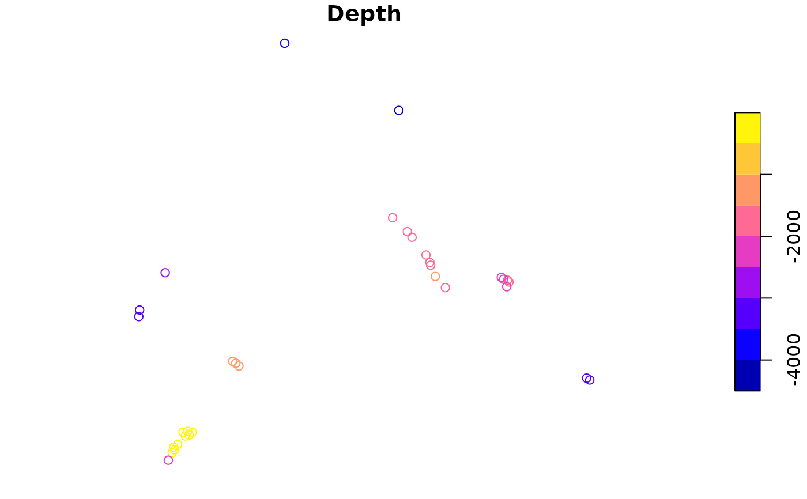

Get seamounts
get_seamounts.RdGet seamounts data in a spatial grid or polygon
Usage
get_seamounts(
spatial_grid = NULL,
raw = FALSE,
buffer = NULL,
name = "seamounts",
antimeridian = NULL
)Arguments
- spatial_grid
sforterra::rast()grid, e.g. created usingget_grid(). Alternatively, if raw data is required, ansfpolygon can be provided, e.g. created usingget_boundary(), and setraw = TRUE.- raw
logicalif TRUE,spatial_gridshould be ansfpolygon, and the raw seamounts data in that polygon(s) will be returned- buffer
numeric; the distance from the seamount peak to include in the output. Distance should be in the same units as the spatial_grid, use e.g.sf::st_crs(spatial_grid, parameters = TRUE)$units_gdalto check units. If buffering raw data, units are metres, unlesssf::sf_use_s2()is set toFALSE, in which case the units are degrees.- name
name of raster or column in sf object that is returned
- antimeridian
Does
spatial_gridspan the antimeridian? If so, this should be set toTRUE, otherwise set toFALSE. If set toNULL(default) the function will try to check if data spans the antimeridian and set this appropriately.
Value
For buffered seamounts as gridded data, a terra::rast() or sf object, depending on the spatial_grid format. If raw = TRUE and buffer = NULL an sf POINT geometry object of seamount peaks within the polygon provided. If raw = TRUE and buffer is not NULL an sf polygon geometry object of buffered seamount peaks within the polygon provided. Note: at present, it is not possible to return gridded seamount peaks: https://github.com/emlab-ucsb/oceandatr/issues/48
Details
Seamounts are classified as peaks at least 1000m higher than the surrounding seafloor Morato et al. 2008. The seamounts peak dataset is from Yeson et al. 2021.
Morato et al. 2010 found that seamounts have higher biodiversity within 30 - 40 km of the peak. To enable this radius of higher biodiversity to be included in conservation planning, the buffer argument can be set, so that each seamount peak is buffered to the radius specified
Examples
# Get EEZ data first
bermuda_eez <- get_boundary(name = "Bermuda")
#> Cache is fresh. Reading: /tmp/RtmpeU9Ld2/eez-2205f12f/eez.shp
#> (Last Modified: 2024-06-28 05:08:34.714315)
# Get raw seamounts data
seamount_peaks <- get_seamounts(spatial_grid = bermuda_eez, raw = TRUE)
#> Warning: attribute variables are assumed to be spatially constant throughout all geometries
plot(seamount_peaks["Depth"])

# Get gridded seamount data
bermuda_grid <- get_grid(boundary = bermuda_eez, crs = '+proj=laea +lon_0=-64.8108333 +lat_0=32.3571917 +datum=WGS84 +units=m +no_defs', resolution = 10000)
#buffer seamounts to a distance of 30 km (30,000 m)
seamounts_gridded <- get_seamounts(spatial_grid = bermuda_grid, buffer = 30000)
#> Spherical geometry (s2) switched off
#> although coordinates are longitude/latitude, st_intersection assumes that they
#> are planar
#> Warning: attribute variables are assumed to be spatially constant throughout all geometries
#> Spherical geometry (s2) switched on
terra::plot(seamounts_gridded)